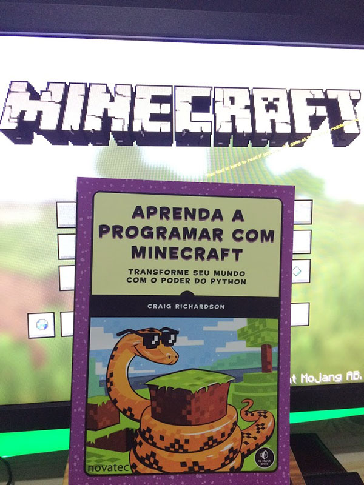
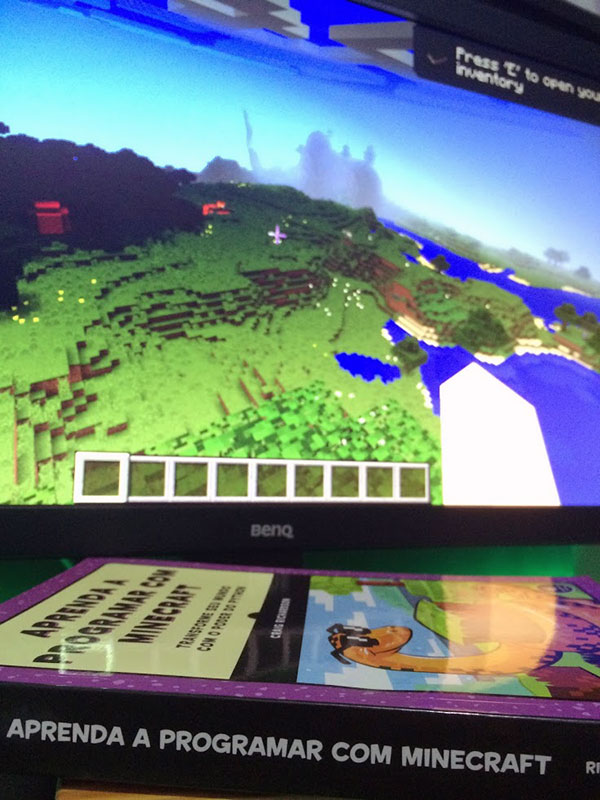

Minecraft conseguiu criar uma cultura e se tornou muito mais do que apenas um jogo, hoje é usado até na educação de crianças, como pode ser visto no documentário Minecraft: The Story of Mojang. Hoje é possível até aprender a programar usando o jogo, e é isso que o livro Aprenda a Programar com Minecraft do Craig Richardson faz de uma maneira incrivelmente didática.
Este livro, lançado no Brasil pela editora Novatec, ensina lógica de programação utilizando a linguagem Python e usado o jogo Minecraft como ferramenta para exibir os resultados. Ou seja, após cada lição, é possível modificar e testar o que foi ensinado no jogo Minecraft para criar estruturas, blocos, itens, entre outras coisas.

Todas as lições no livro possuem imagens do jogo para mostrar como é o resultado esperado, o que ajuda bastante. Ao invés de aprender a programar em Python utilizando o terminal ou prompt de comando, tudo que é programado pode ser visto no jogo, seja em formato visual (blocos, por exemplo) ou em mensagens de texto na tela do jogo.
O autor já trabalhou na Fundação Raspberry Pi, por isso além de Windows e Mac também é possível seguir o livro utilizando Raspberry Pi. O capítulo inicial do livro ensina a configurar o ambiente de desenvolvimento, inclusive com o Minecraft API e Minecraft Server.
O livro cobre todo básico de programação com Python: variáveis, strings, condicionais, loops, funções, operações básicas de matemática e lógica, estruturas de dados como lista e dicionário, e como salvar o progresso ou estado do jogo em arquivos de texto. Por fim um ótimo capítulo, porém básico, sobre orientação a objetivos com Python, tudo para deixar o leitor com uma vontade de continuar aprendendo a programar e testar seus programas no Minecraft.

Este livro é incrível para quem quer aprender a programar, e o uso do Minecraft é um grande diferencial para incentivar até mesmo crianças e adolescentes a entrarem para o lado negro da força e se tornarem programadores. Dependendo da idade provavelmente é necessário o acompanhamento de um adulto, pelo menos para configurar o computador e fazer os primeiros exercícios, mas depois acho que é possível continuar sozinho.
Após terminar este livro se você quiser continuar estudando desenvolvimento de jogos com Python, com certeza o próximo livro que eu indico é o Introdução ao Desenvolvimento de Jogos em Python com PyGame. Assim você terá toda base necessária para programar jogos em Python, ou pelo menos criar mods mais complexos para Minecraft. É claro que existem diversos livros sobre Python, mas acredito que estes dois são suficientes para iniciar tanto na programação em Python quanto desenvolvimento de jogos.
Muito obrigado a editora Novatec por me enviar este livro. Este livro pode ser adquirido pelo site da Novatec ou em praticamente qualquer livraria. Recomendo também dar uma olhada no site do autor, Craig Richardson, pois tem bastante conteúdo adicional para o livro disponível lá (em Inglês).